← 返回阅读库 · 原论文目录
论文讲解阅读文档 · 新模型 · v071
Per-Pixel Classification is Not All You Need for Semantic Seg[2107.06278]
视频时长 00:10:28；讲解文字 4,742 字符；提取讲解画面 45 张。按视频原顺序阅读，每段文字保留时间戳。
文字来自整段视频的自动语音转写，按自然停顿分段，并与 PPT / 论文页面 / 演示画面对齐。未将讲解压缩为摘要；术语、数字和口述公式请结合画面及原论文核对。 阅读稿已校正规范部分明确术语误识别；原始逐字稿和每处修改记录另行保留。
讲解画面为源视频截图（640×360），不是可编辑 PPT 文件。全片按每秒 2 帧扫描内容变化，逐步展开页保留；连续动画保留代表画面。清晰度受源视频限制。
下载完整资料包 · 含离线 HTML、PDF、Word、全部 PPT 画面和字幕。
原论文与材料
Per-Pixel Classification is Not All You Need for Semantic Segmentation · 下载完整 PDF（17 页）
按时间阅读
00:00:00–00:00:21 · 画面 001
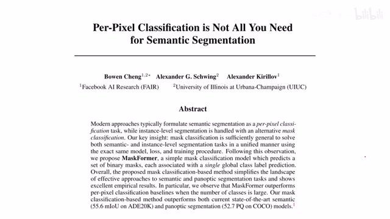
00:00:00–00:00:21 · 画面 001大家好,今天我们来快速说一篇论文 Per-Pixel Classification is not all you need for semantic segmentation 这篇论文还是看到标题做这个 semantic segmentation 的但是它强调说我们不是说每个像素都要做分类的那么这个就是本文最大的创新点那么我们来看到本文的核心的 intuition 那么想到我们过去在做语义分割的时候比如我们之前介绍的 DeepLab V3 Plus
00:00:21–00:01:04 · 画面 002
00:00:21–00:01:04 · 画面 002那么无论中间怎么样这些操作吧它最后呢生成一个跟原始的图像尺寸一模一样的这么一个图像那么这个图像的每一个像素呢你选进去拆开来看就是这一个像素属于各个类别的这样一个概率它就是对于每一个像素做一个多分类问题那么在本文中呢作者提出了一个叫做 Mask Classification 的概念它的意思呢我是换一种方法来理解这个 Semantic Segmentation首先呢我先做一个这个 instance segmentation 那这里呢就是说我也不知道啊我这个画出来这么一个物件是什么东西但是呢直觉上告诉我啊这一块像素应该属于这一个物件那么我们把这个物件拎清楚之后呢它是在一个地位的 representation space 里面这么一个空间里面给它拎清楚之后呢然后呢我们再来仔细的端详说这每一个物件呢是什么所以你可以看到区别于这个
00:01:04–00:01:05 · 画面 003
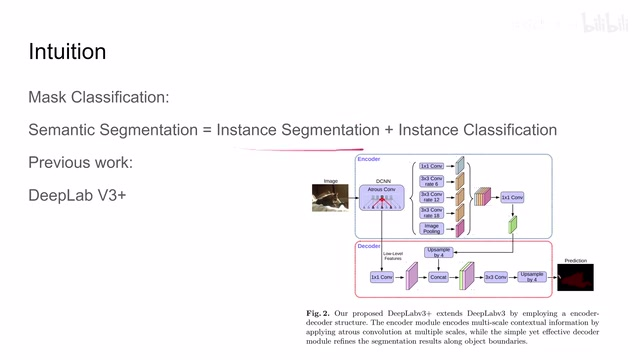
00:01:04–00:01:05 · 画面 00300:01:05–00:01:49 · 画面 004
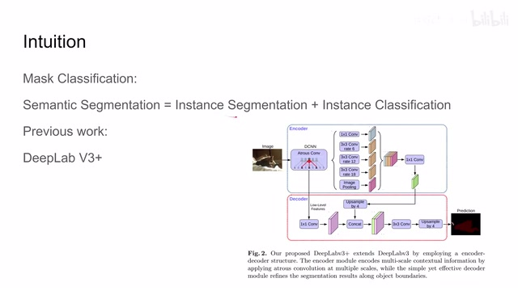
00:01:05–00:01:49 · 画面 004每一个像素都去做一个这个分类的问题那么本文呢只需要关注每一个 instance 也就是说我划分出来的每一个物件它是哪一类就可以了那么当我们确定了这个物件类别之后呢我们只需要把这个物件中包含的所有像素都给它刷成这个类别那就是完成了这个 Semantic Segmentation 的任务那么接下来呢我们就来看作者是怎么样实现这个过程这是我们之前所提到的我们首先呢要把这个图像分成 N 个这个区域
00:01:49–00:02:22 · 画面 005
00:01:49–00:02:22 · 画面 005这个 n 呢实际上呢并不是需要一定等于这个 kk 是我们这个数据集中所有可能的这个物件的这个数量就是物品的种类嘛实际上这个 n 呢一般都是大于一些这个 k 的那么在理想情况下呢我们会用这些 binary mask 也就是非一即零的这样一个 mask 来表达我们说这个物件那么在有了这些 mask 之后呢我们呢再去来区分每一个 mask 对应的区域它究竟是哪一个类别
00:02:22–00:02:24 · 画面 006
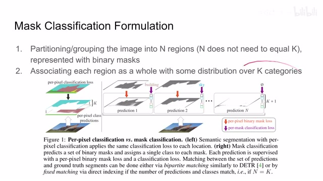
00:02:22–00:02:24 · 画面 006那这里呢作者有一个非常直观的演示那对于这个传统的 perpixel 的对于每个像素的 classification 来说呢那么你可以看到这个每个像素这个 vector 呢它就是这个 k 类啊属于每一类它的概率嘛这个就是 perpixel 嘛那在本文中呢作者是说啊我现在呢先把它分成 n 个这样一个区域那每个区域呢代表一个物件你看到这个区域呢比如说这个是应该是一个教堂那这个区域呢是这个天空
00:02:24–00:02:52 · 画面 007
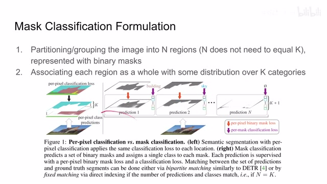
00:02:24–00:02:52 · 画面 00700:02:52–00:03:05 · 画面 008
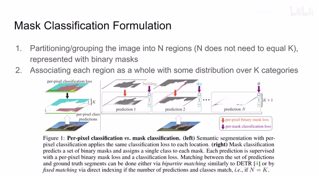
00:02:52–00:03:05 · 画面 008然后等等等等那么当然呢还会包含一个这个空的区域表示没有什么东西那么有了这个 n 个区域之后呢我们就可以根据这个区域整个的这个 feature 来给它做这个 classification 那么在理论上它呢包含了整个这个区域里面的相关的形状信息所以说呢它会给我们这种 perpixel 的方法呢提供更多的信息来构建更加准确的这个 classification 然后这个呢就是本文的核心的思想
00:03:05–00:03:06 · 画面 009
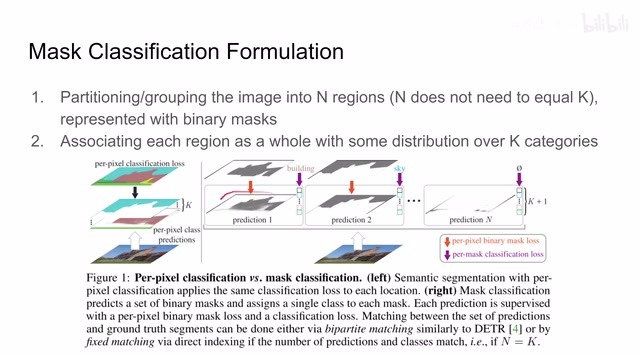
00:03:05–00:03:06 · 画面 00900:03:06–00:03:17 · 画面 010
00:03:06–00:03:17 · 画面 01000:03:17–00:03:18 · 画面 011
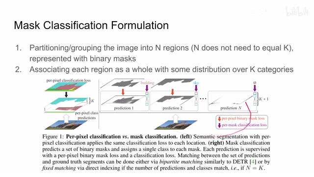
00:03:17–00:03:18 · 画面 01100:03:18–00:03:24 · 画面 012
00:03:18–00:03:24 · 画面 012那么下面呢我们就来继续来看作者是怎么样围绕这个思路来构建这个模型的这里呢我们来看到作者提供的流程图那么首先呢一张图像进来送到这个 Backbone 里面提一些 featureBackbone 呢比如说是 ResNet 你进点了各种尺寸的 ResNet 总有一款适合你那当然呢作者也试了这个 Swin Transformer 都是极好的那么有了这个 feature 之后呢我们扔到这个 Transformer Decoder 里面
00:03:24–00:03:49 · 画面 013
00:03:24–00:03:49 · 画面 013那么看到这四种颜色的小方块，有些朋友 DNA 是不是动了？是的，没错。那么因为这篇论文的作者有一位也是 DETR 的作者，我们来到这里，你可以看到他们用的都是一样的思路，就是用 backbone 提出 feature 之后，来放到我们的 transformer 的 encoder 和 decoder 里面。那么在 DETR 里面，我们主要是提 bounding box，因为是做的是 object detection。那么在本文的方法中，我们经过 transformer 经过 mlp 之后
00:03:49–00:03:50 · 画面 014
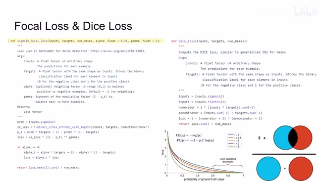
00:03:49–00:03:50 · 画面 01400:03:50–00:03:55 · 画面 015
00:03:50–00:03:55 · 画面 01500:03:55–00:03:57 · 画面 016
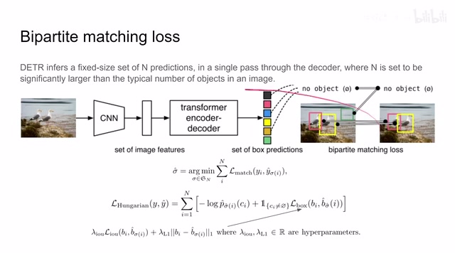
00:03:55–00:03:57 · 画面 01600:03:57–00:04:08 · 画面 017
00:03:57–00:04:08 · 画面 01700:04:08–00:05:37 · 画面 018
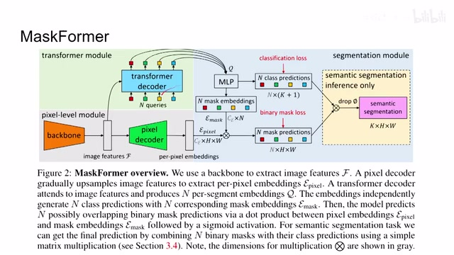
00:04:08–00:05:37 · 画面 018提出的是 n 个不同的区域区域的 representation。一方面，我们可以用 representation 直接去做 prediction。你可以看到我们这里有 n 乘以 k 加 1 个，k 表示我们的数据集中有包含的所有的类的数量加 1 是为什么？因为我们之前提到了，万一 n 里面啥都没有，我们要加一类这个是空集，这个是做 prediction 的 head。此外，我们要完善 mask。
因为虽然我们这里提到的这个是 region 的 representation，但是它只是一个 representation，它呢只是一个长度为 cy 的这样一个 vector。那怎么样把这样一个 vector 给它重新填充成一个 h 乘 w 的这样一张图像呢？那这里呢我们看到作者呢是用它直接乘上了这个我们 pixel decoder，就是我们 feature 后面接一个 decoder。那 decoder 出来的图像呢是 h 乘 w，那它的深度呢是这个 cy。
那么两个 sy 一对在这个维度上相乘，那么呢我们就得到了 n 张 h 乘 w 这样一个图像。那么每一张图像呢就是我们的这个 mask，这是一个 binary mask 嘛，表示这个区域哪一个属于这个区域，哪一个不是嘛。这样子做了一个预测。那么你最后把这两项结合起来呢，就可以输出一个常规的这个 semantic segmentation 它这样的一个结果。那么这时候呢，有细心的朋友呢已经注意到了。
00:05:37–00:05:46 · 画面 019
00:05:37–00:05:46 · 画面 019我之前是读过 DETR 的，我书读的多，你不要唬我。DETR 里面是有 TransformerEncoder 加 Decoder 的，所以它是要一个 TransformerModule。这里为什么你只画一个 TransformerDecoder？原因很简单，因为这里我们确实去掉了 Encoder。去掉 Encoder 之后就存在一个问题，我们如果回顾一下 TransformerDecoder 的结构，它包含两个 Multi-Head Attention。
00:05:46–00:05:47 · 画面 020
00:05:46–00:05:47 · 画面 02000:05:47–00:05:48 · 画面 021
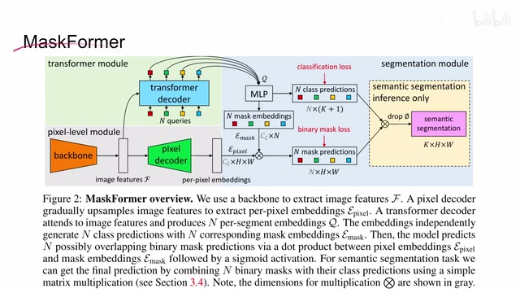
00:05:47–00:05:48 · 画面 02100:05:48–00:06:01 · 画面 022
00:05:48–00:06:01 · 画面 02200:06:01–00:06:33 · 画面 023
00:06:01–00:06:33 · 画面 023那第一个呢是在它内部做这个大家都没有问题，那么第二个这个 multi-head attention 呢，它需要的这个 key 和 value 呢来自于我们 encoder 的输入啊。那你现在没有 encoder 怎么办呢？不要紧啊，这里做着说，因为我们的 backbone 已经提出 feature 来了，把它呢还是按照我们送到 encoder 里面的方法划分成一个个的 patches，然后呢把它这些 patches 直接作为这个 key 和 value 啊，就给它送进来。
所以你可以看到在本文的结构中，我们并没有 encoder，直接是六层的 decoder 就结束了。那么计算过 attention 之后再过 MLP 就是一个标准 decoder 这样一个结构。记得这里有 positional embedding，这些我们都是之前聊过的。那么此外还需要值得说明的就是 n 个 queries，它的输入就是全 0 的这么一个 vector。
00:06:33–00:06:39 · 画面 024
00:06:33–00:06:39 · 画面 02400:06:39–00:06:51 · 画面 025
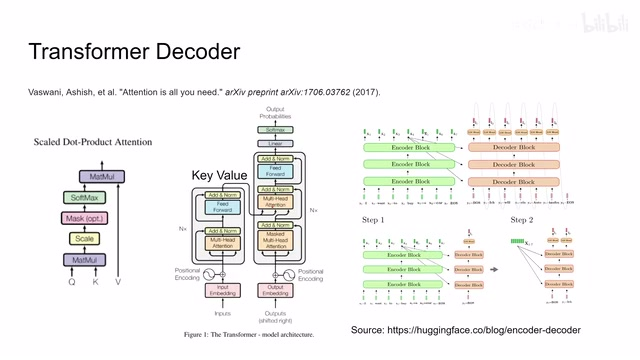
00:06:39–00:06:51 · 画面 02500:06:51–00:07:09 · 画面 026
00:06:51–00:07:09 · 画面 026但是呢，我们是给它配上了一个 learnable 可学习的这个 positional embedding。这样子呢，我们针对每一个 query 呢还是能够学到不同的东西。好的，那么以上呢就是本文提出的这个 MaskFormer 这样一个网络的这么一个结构。那么下面呢，我们就应该关注作者是用什么样的 loss 去训练它了。
00:07:09–00:07:11 · 画面 027
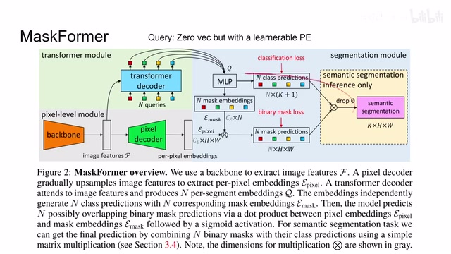
00:07:09–00:07:11 · 画面 02700:07:11–00:07:17 · 画面 028
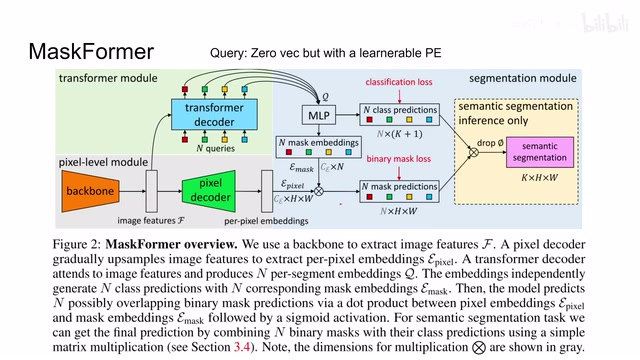
00:07:11–00:07:17 · 画面 02800:07:17–00:07:39 · 画面 029
00:07:17–00:07:39 · 画面 029那么还是如果你熟悉这个 DETR 呢，你应该知道在 DETR 里面呢，我们提出这个 bounding box 之后呢，我们做了一个双向的匹配，因为我们预测出来的这些 bounding box 的顺序，它不一定就是我们 Ground Truth 中标记的这样一个 bounding box 的顺序。那匹配完之后，假如说我们现在得到了这个每个 box 之间的对应，那么在 DETR 里面呢，我们是计算了这样一个 loss，这个 loss 你看着很唬人啊，其实呢你看到它前面这部分呢是 cross entropy
00:07:39–00:07:40 · 画面 030
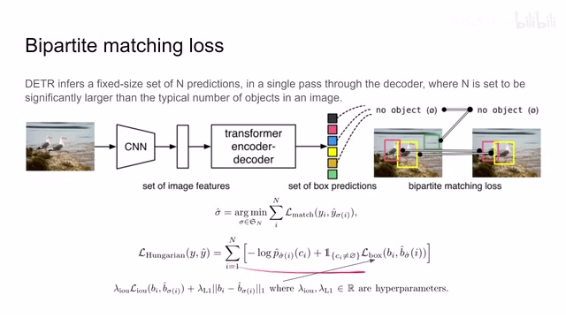
00:07:39–00:07:40 · 画面 03000:07:40–00:07:53 · 画面 031
00:07:40–00:07:53 · 画面 031他呢用来计算这个 classification 这样的 loss，也就是说我分类过程中分错类别导致的这样一个 loss。那后面呢是关于这个 bounding box 的 loss，那也就是说我希望这 bounding box 一样准确嘛，两个 bounding box 你看这里他计算了这个 IoU，还有呢就是他们的这个 L1 distance，那这样子呢就把 bounding box 的位置呢给它约束起来了。那么回到我们这篇论文，现在呢我不是有 n 个 bounding box，我现在呢是有 n 个这个 regionsn 个 masks
00:07:53–00:07:54 · 画面 032
00:07:53–00:07:54 · 画面 03200:07:54–00:08:06 · 画面 033
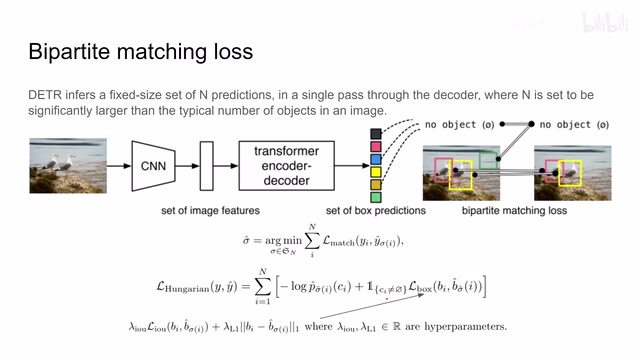
00:07:54–00:08:06 · 画面 03300:08:06–00:08:39 · 画面 034
00:08:06–00:08:39 · 画面 034那么它呢在这个分类来看，一样的也是一个 cross entropy，那就可以把我们的这个分类的这个 loss 呢给它约束住，只不过原来我们是分 n 个物件，现在是变成了 n 个 regions，那本质上是一样的东西。那么此外呢，我们还需要做一个事情呢，就是让这个两个 mask 尽量接近，也就是标识这个物件它的具体的区域嘛，我要让它尽量接近。这里呢，本文提出了说我用这个 focal loss 加这个 Dice loss
00:08:39–00:09:19 · 画面 035
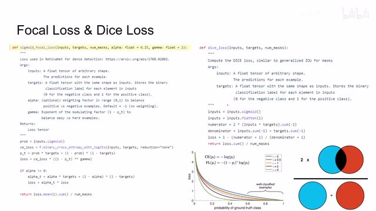
00:08:39–00:09:19 · 画面 035我们一样看这是什么 focal loss 其实之前我们已经介绍过了本质来看就是我输入是一个二值的模板图像它的目标也是一个二值的模板图像我直接在 pixel level 上做 binary cross entropy 然后放到 focal loss 它的公式里面在每个像素上求个平均然后除上我们 mask 数量这个就是 focal loss 那么第二个 loss 是 Dice loss、Dice loss 其实更简单了你可以看这个图就是两个区域它们 intersection 的部分乘以 2，再比上两个区域的面积之和。那么最终呢，作者通过规划这两个 loss，其实就是把这两个 loss 线性组合一下，直接加起来就可以呢，对我们这个 mask 的这个形状来进行约束。那总体来说呢，是一个非常直观的设计，如果你已经熟悉这个 DETR 的话呢，对这个理解这篇文章来讲呢，毫无难度的。好的，那么我们来看作者汇报一些结果，首先是这个 Semantic Segmentation
00:09:19–00:09:20 · 画面 036
00:09:19–00:09:20 · 画面 03600:09:20–00:09:23 · 画面 037
00:09:20–00:09:23 · 画面 03700:09:23–00:09:28 · 画面 038
00:09:23–00:09:28 · 画面 03800:09:28–00:09:29 · 画面 039
00:09:28–00:09:29 · 画面 03900:09:29–00:09:36 · 画面 040
00:09:29–00:09:36 · 画面 04000:09:36–00:09:43 · 画面 041
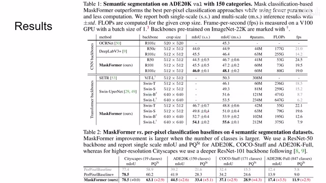
00:09:36–00:09:43 · 画面 041各种不同的数据集对比了之前的一些方法，很漂亮的一些数字了。然后是在其他这些数据集，我们可以看到提升的是非常明显的，很有成效的这样一个工作。此外作者还汇报了一些 ablation，重点介绍了 mask classification 比 per pixel 的 classification 它的优秀，优秀在哪，还有我们怎么样确定 number of queries，包括在复录中还有更多的实验，感兴趣的朋友欢迎到原文查看
00:09:43–00:09:45 · 画面 042
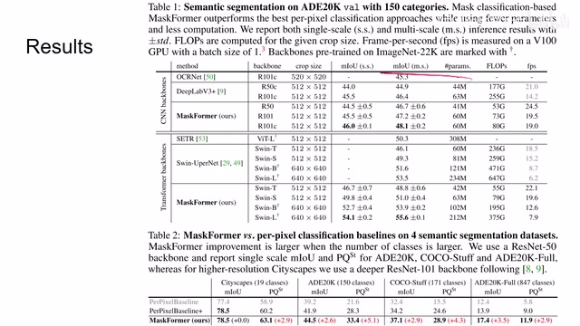
00:09:43–00:09:45 · 画面 04200:09:45–00:09:54 · 画面 043
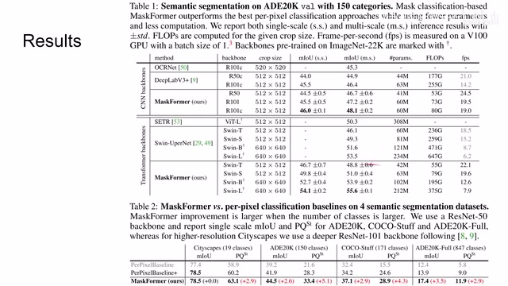
00:09:45–00:09:54 · 画面 04300:09:54–00:10:28 · 画面 044
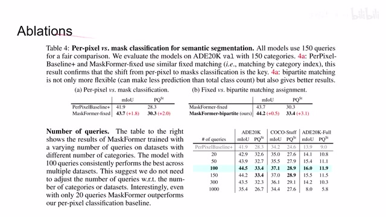
00:09:54–00:10:28 · 画面 044那么总的来说，这篇是一个思路非常直接，你自己想，虽然跟原来定义不一样，但是它这个定义好像似乎更有道理。那么实现出来的性能也不错，很有意思的一篇工作。好了，那么以上就是我对这篇论文的一个简单的分析，感谢您的收看，再见
00:10:28–00:10:28 · 画面 045
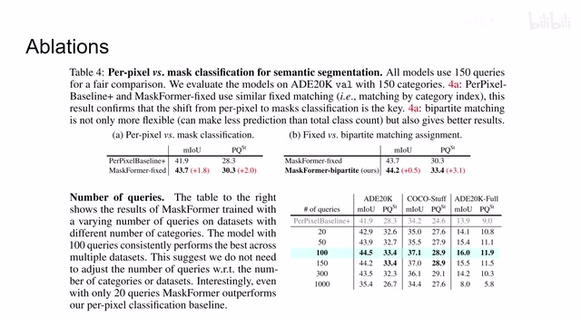
00:10:28–00:10:28 · 画面 045转写与来源说明 · 0 个自动复核提示
保留 23 个原始语音片段，0 个片段触发自动复核提示。提示仅用于定位可能的术语、重复或识别问题，不等于已确认错误。
讲解画面为源视频截图（640×360），不是可编辑 PPT 文件。全片按每秒 2 帧扫描内容变化，逐步展开页保留；连续动画保留代表画面。清晰度受源视频限制。
原视频：paper/合集_2026-10-16_新模型/[论文简析]Per-Pixel Classification is Not All You Need for Semantic Seg[2107.06278].mp4
SHA-256：39fe8ce17ae4f785404730002e9c8718d900f1d8a9a5d00b8106fff63577e573
全文按视频语音与画面制作。原论文可从上方链接下载；完整资料包保留全文、原始逐字稿、字幕和校对记录。